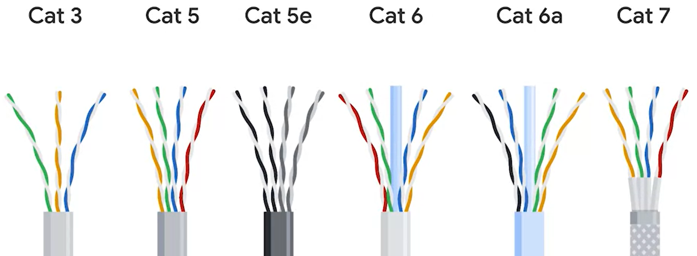

Cables

Crosstalk is when an electrical pulse on one wire is accidentally detected on another wire.
twisted pair - 4 pairs of twisted cables that allows duplex communication - bidirectional
simplex communication - unidirectional
full-duplex - when both client and server allow duplex
Unshielded twisted pair (UTP) - The most common and least expensive type of Ethernet cable found in business and home networks. UTP cables offer very basic protection against EMI, RFI, and crosstalk interference.
Shielded twisted pair (STP) - Used in environments where electromagnetic interference (EMI), radio frequency interference (RFI), and crosstalk with nearby cables have been identified as a problem for network communications. An STP cable uses a braided aluminum and/or copper shielding to encase the four twisted pairs underneath the outer jacket.
Foiled twisted pair (FTP) - Also used in environments where EMI, RFI, and crosstalk are a problem. An FTP cable uses a thin foil shield that wraps around the bundle of twisted pair wires underneath the outer jacket.
Straight-through cable - when the order of the wiring at both ends are the same
Crossover cables - will have different patterns in the color order of the twisted pairs